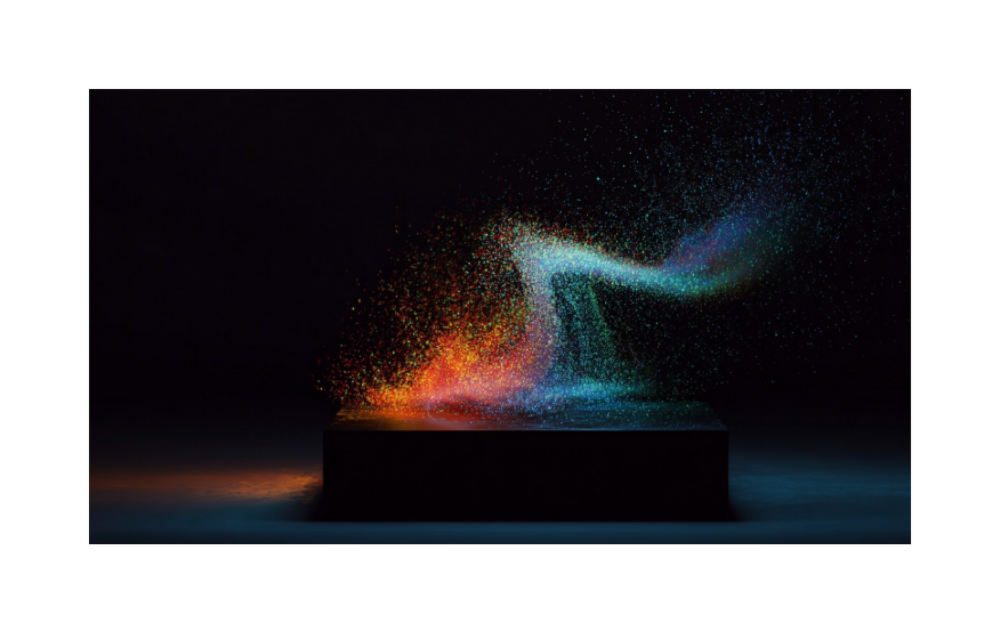
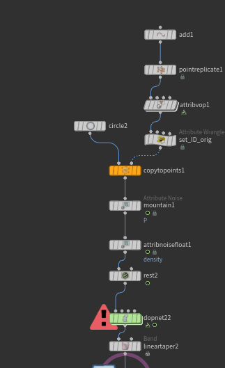

第 5 周
团队成员
Yiqi Zheng（特效）
Riley Ho（特效）
Itim Kongsakulvatanasook（特效）
Sofia Mancias（合成）
2 月 8 日
Benji Hopkins（外观开发）
SCAD × HARBOR × ETC － 第 5 周
大家好，这是我 SCAD × Harbor × ETC 部落格的第五周！
以下是周二简报后导师们的回馈。
Kyle：
-
可以在中间剪掉一些，让镜头不要太长，但要确保摄影机运动合理
-
镜头 3 看不出粒子和列印成品之间的关联
-
要怎么让粒子感觉更像液体、不那么固态
-
让粒子成为光源，会更融入场景
-
镜头 4 是主镜头
Beck：
-
粒子和颜料的侧面视角没有关联
-
镜头 2 要注意 substeps 和色带问题
-
需要动态模糊，粒子太清晰了，看得出明显的三个点
-
粒子太大，而且需要更多粒子
-
中心附近的粒子少一点
-
把粒子、烟雾和拖尾分层叠加
-
不一定只能用一个模拟
-
叠加多个模拟来增加复杂度
-
镜头 3：粒子撞到碰撞体而不是木头本身，感觉像意外而不是刻意的创作选择
-
粒子在抵达画作之前不应该停下来
-
粒子的 pscale 要有变化，较旧的粒子开始消失
-
粒子可以做很多很酷的效果，去做吧
-
镜头 3 也许可以更微距
-
目前粒子因为高光太强，看起来像亮粉
-
需要的是粉笔般的颜料质感
-
专注在一个效果上
Molly：
-
粒子的速度太快，让我们看不到粒子组成画作的过渡，只看到它们喷发出来
Stephen：
-
喜欢最后一个镜头的布局
Hailey：
-
把镜头 3 和 4 合并
Billy：


待办事项：
-
调整粒子的路径与流动形状（加入 noise）
-
增加体积感并让粒子更细
-
为粒子做更多颜色变体
这周我的主要目标是让粒子看起来更像流体，并让流动的边缘有一些变化。这是我第一版的粒子流。我试著加更多 noise 来达成，但结果不理想，看起来太乱了。第二个镜头中，我调整了最终流动的粗细，并修改风力和 PopcurveForce 的设定，现在看起来更像流体了。
我也试著让发射器有变化，让粒子有更多变化。因为没有得到更好的结果，我开始尝试之前提过的另一种方法：pathdeform。单一流动的效果比之前好，但六道流同时出现时就显得太杂乱。我真的需要在边缘变化与避免过多杂讯之间取得平衡。




我喜欢这种感觉，但可惜流动不够平顺，对路径的控制也比较少。

当我试著放更多道流时，画面开始变得杂乱。不过这个方法适合流动数量少的特写镜头，因为只需要模拟一次，就能套用到任何曲线上，非常方便实用。
-
调整路径（为粒子增加变体）
-
改善粒子的材质